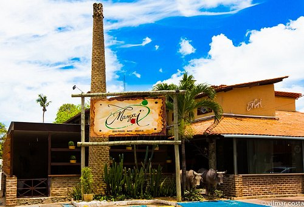

Principais Destaques de João Pessoa
| Lugar | Atração Principal |
|---|---|
| Farol do Cabo Branco | Localizado na Ponta do Seixas, o ponto mais oriental das Américas, com vista panorâmica do oceano. |
| Centro Cultural São Francisco | Complexo arquitetônico barroco do século XVI, rico em arte sacra e história colonial. |
Quer descobrir mais destinos? Acesse o Portal Oficial de Turismo para planejar seu roteiro.
Deixe sua Avaliação
Galeria de Fotos
Farol do Cabo Branco

Restaurante Mangai
